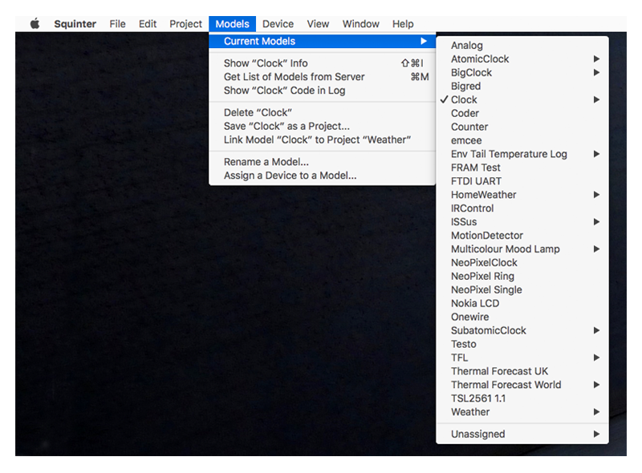
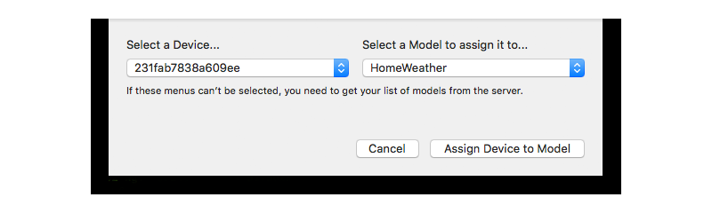

Squinter 2.0 Beta“A Squirrel Integrator”
Contents |
- Working With Projects and Products
- Working With Device Groups
- Working With Devices
- Including Libraries In Your Code
- Debugging Code
- Configuring Squinter
Working With Device Groups
Squinter lists all of the Device Groups that belong to a given Project. When you select a Project, its Device Groups, if any, are listed in the ‘Project’s Device Groups’ submenu in the ‘Device Groups’ menu. Initially the first Device Group, listed alphabetically, is selected when you select a Project. Only the Device Groups that belong to the currently selected Project are listed, so to view a Device Group from another Project, just select or open that project.

If any devices have been assigned to a Device Group, they are listed as submenus off each Device Group listed in the ‘Project’s Device Groups’ submenu. Selecting a device causes its parent Device Group to be selected too.
When you select a Project or one of its Device Groups, the ‘Device Groups’ menu provides a number on the selected Device Group. This includes editing its name and/or description, getting information about the code deployed to it, and event deleting the Device Group from your Project and the impCloud. However, you can’t delete a Device Group that has devices assigned to it. You can restart simultaneously all of the devices assigned to the selected Device Group here too.
Because the code you work on will be uploaded to a given Device Group rather than to a Project (as was the case with Squinter 1.0), you will find the commands that allow you to access a Device Group’s source code files (and any libraries or other Squirrel files they contain) from submenus included in the ‘Device Groups’ menu.

You can add a new Device Group to a Project either by selecting the option from the ‘Project’s Device Groups’ submenu, or by choosing ‘Add source files to Project’ from the ‘Files’ menu. This can be used to add agent and/or device code files to an existing Device Group, or to add them to a new Device Group created specially.
Next: Working With Devices